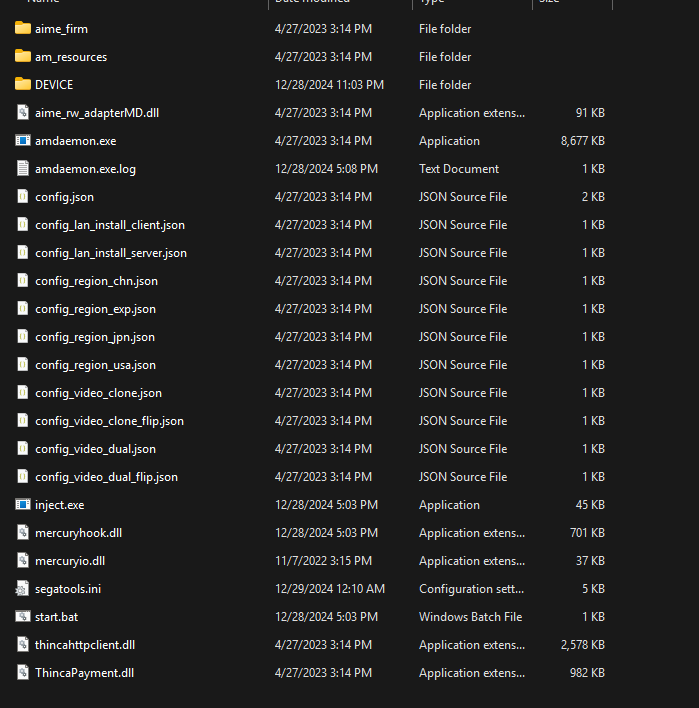

WACVR Setup
What is this?
This guide contains instructions for playing WACCA at home without owning a cabinet, using WACVR.
Things you'll need
- Game files (The guide was written for 3.10.00, but should work with most versions)
- A VR headset you can connect to a computer (a Quest 3S is used for testing here)
- A VR capable computer, this is non-negotiable as there is no way to run WACVR and WACCA data on Quest headsets.
- SteamVR
- WACVR
- TeamTofuShop's ST
- FTDI Drivers
- Patience, maybe some lemonade.
Making sure your data is ready
If your data is already set up properly, you may skip the following steps and proceed to Setting up WACVR
Disclaimer
This process starts from freshly downloaded data with no changes to it (or "clean" data), if your data isn't clean, I suggest downloading a clean copy before continuing as it may cause issues later down the line.
Setting up ST
Extract mercury.zip from the ST zip, and then extract the contents of mercury.zip into the App/bin folder
within your game folder, the folder should look like this:

Changing Configuration Files
Open segatools.ini in your preferred text editor and change the vfs settings as follows:
[vfs]
; Insert the path to the game AMFS directory here (contains ICF1 and ICF2)
amfs=..\..\amfs
; Insert the path to the game Option directory here (contains Axxx directories)
option=
; Create an empty directory somewhere and insert the path here.
; This directory may be shared between multiple SEGA games.
; NOTE: This has nothing to do with Windows %APPDATA%.
appdata=..\..\appdata
option is blank on purpose, WACCA does not use option files)
You will also need to change the mercuryio section as follows:
[mercuryio]
; To use a custom WACCA IO DLL enter its path here.
; Leave empty if you want to use Segatools built-in keyboard input.
path=mercuryio.dll
FTDI Drivers
This step is REQUIRED for WACCA to launch or else it'll just error out.
These drivers are used for the board that controls the LED strips on the console. It is required for lights to work.
Open the FTDI driver archive, extract CDM-v2.12.36.4-WHQL-Certified/amd64/ftd2xx64.dll to
/App/WindowsNoEditor/Mercury/Binaries/Win64 and rename it to ftd2xx.dll.
Offline mode
Note
This part is only required if you are not using 3.10.00, as that version is always offline.
If you do not plan on connecting your game to a server to save scores and have a profile, you can enable offline mode.
Navigate to App\WindowsNoEditor\Mercury\Config and open DefaultHardware.ini and change OfflineMode to true
Now launch start.bat and the game should go through the startup process without a hitch.
Setting up WACVR
DO NOT USE THE AUTOMATED SETUP
It has been broken for years and does not set things up correctly.
Extract WACVR somewhere, and copy the mercuryio.dll file to the App/bin folder in your game folder.
Intel CPU Bug
If you have an Intel Core 10th gen or newer CPU, you need to edit start.bat in the App/bin folder, and add this
after the @echo off line:
set OPENSSL_ia32cap=:~0x20000000
Start up your VR software as well as SteamVR, then launch WACVR, followed by WACCA. WACVR should connect to WACCA when it starts.
Disclaimer
If your experiencing a warped screen in WACVR, set your monitor to portrait mode 1080p and check
Full Display Capture in WACVR, I have no clue why this happens, but this is the solution that works for me.